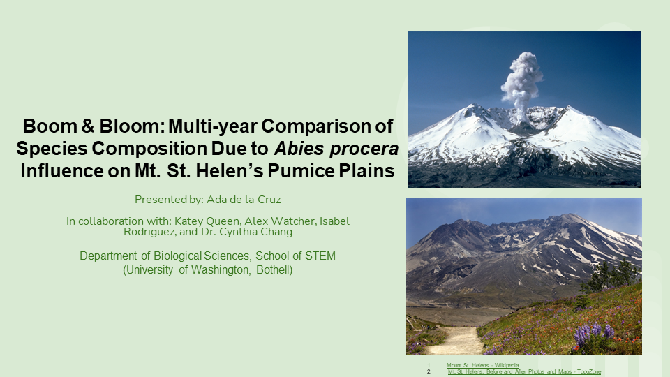
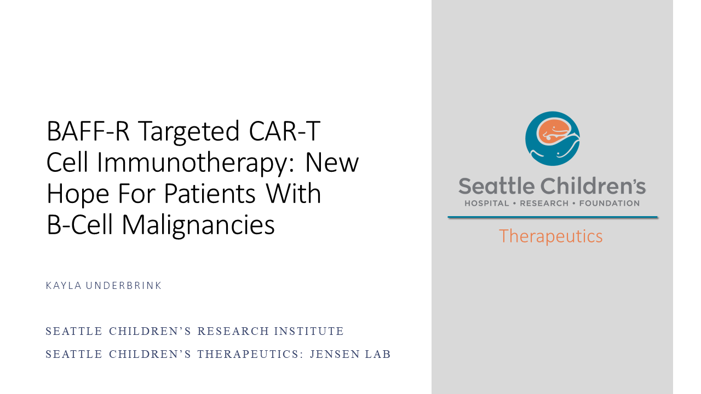
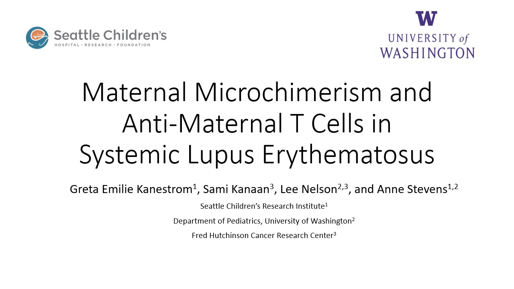
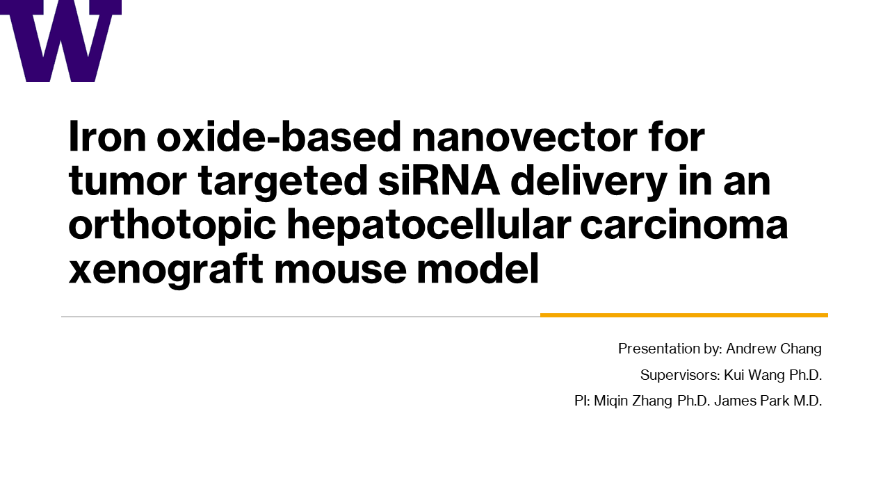
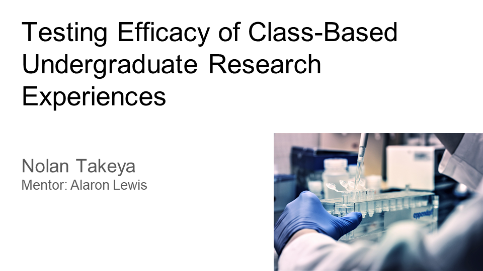
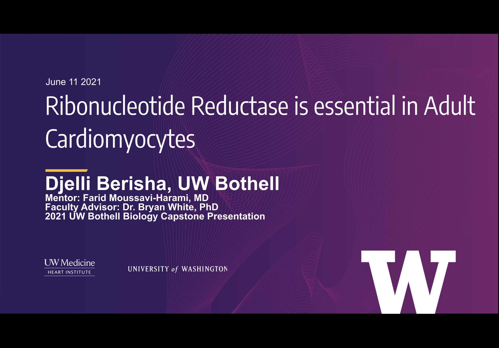

Spring 2021 Capstone Symposium
Biological Sciences
June 11, 2021
Click here to join the Zoom room for the live Biological Sciences presentations.
The last 5 minutes of every presentation is open for Q&A to the presenter(s).
9:10 AM - 9:15 AM
Welcome & Introductions
Dr. Alaron Lewis
Division Chair of Biological Sciences
-
9:15 AM - 9:30 AM
Boom & Bloom: Multi-year Comparison of Species Composition Due to Abies Procera Influence on Mt. St. Helen's Pumice Plains
Ada de la Cruz
Biology (B.S.)
Faculty Advisor: Dr. Cynthia Chang
- 
-
9:30 AM - 9:55 AM
Investigating the Prevalence of Campylobacter Jejuni in Wetland Water at the University of Washington Bothell and its Potential Health Impact on the surrounding community by sequence typing water isolates
Abi Bittle
Dajana Hysa
Marco Lizarraga
Biology
Biology (B.S.) / Chemistry Minor
Biology (B.S.) / Chemistry Minor
Faculty Advisor: Dr. Keya Sen
-

-
9:55 AM - 10:10 AM
Fate and Function of Lake Truly
Brandon Keyes
Earth Science Systems (B.S.)
Faculty Advisor: Dr. Avery Shinneman
-

-
10:10 AM - 10:35 AM
Sequence Typing and Source Tracking of Crow (Corvidae) Campylobacter Isolates from Washington Wetlands and Kolkata, India: Is there a difference in their origins?
Elena Nguyen
Megavarsha Subramani Henry Van Vuitton
Biology (B.S.)
Biology (B.S.) / Diversity Minor
Biology (B.S.)
Faculty Advisor: Dr. Keya Sen
-
 Sequence typing and source tracking of crow (Corvidae) Campylobacter isolates from Washington wetlands and Kolkata, India.png)
-
10:35 AM - 10:50 AM
BAFF-R Targeted CAR-T Cell Immunotherapy: New Hope for Patients with B-Cell Malignancies
Kayla Underbrink
Biology (B.S.)
Chemistry Minor
Faculty Advisor: Dr. Michael Jensen M.D.
- 
10 Minute Break
-
11:00 AM - 11:25 AM
The Study of Antibiotic Resistance Genes in Campylobacter Species Obtained from UW Bothell Wetlands Using Whole Genome Analysis
Lauren Nguyen
Michelene Nguyen
Tien Le
William Ho
Biology (B.S.) / Chemistry Minor
Biology (B.S.) / Health Studies (B.S)
Biology (B.S.) / Health Studies (B.S)
Biology (B.S.) / Neuroscience Minor
Faculty Advisor: Dr. Keya Sen
-

-
11:25 AM - 11:40 AM
Maternal Microchimerism and Anti-Maternal T Cells in Systemic Lupus Erythematosus
Greta Kanestrom
Biology (B.S.)
Chemistry Minor
Mentor: Dr. Anne Stevens M.D.
- 
-
11:40 AM - 12:05 PM
Determining the Resistance of Campylobacter Isolates Recovered from Crow Feces with Various Antibiotics
Bessy Bao
Kindra Fuller
Pooneh Hajian
Biology (B.S.)
Biology (B.S.)
Biology (B.S.) / Neuroscience Minor
Faculty Advisor: Dr. Keya Sen
-

-
12:05 PM - 12:20 PM
Iron Oxide-Based Nanovector for Tumor Targeted siRNA Delivery in an Orthotopic Hepatocellular Carcinoma Xenograft Mouse Model
Andrew Chang
Biology (B.S.)
Supervisor: Dr. Kui Wang
PI: Dr. Miqin Zhang & Dr. James Park
- 
-
12:20 PM - 12:45 PM
Using Genomics to Identify Adaptations
Abigail Dy
Michael Chaichana
Andrew Simnhoung
Faduma Abukar
Biology (B.S.) /
Chemistry Minor & Neuroscience Minor Biology (B.S.)
Biology (B.S.) / Chemistry Minor
Biology (B.S.) / Chemistry Minor
Faculty Advisor: Dr. Kristina Hillesland
-

15 Minute Break
-
1:00 PM - 1:15 PM
Testing Efficacy of Class-Based Undergraduate Research Experiences
Nolan Takeya
Media & Communication Studies (B.A.)
Faculty Advisor: Dr. Alaron Lewis
- 
-
1:15 PM - 1:40 PM
Analysis of M. maripaludis and D. vulgaris in Timeshift Experiment
Alan Chan
Catherine YehBiology (B.S.)
Biology (B.S.) / Chemistry MinorFaculty Advisor: Dr. Kristina Hillesland
-

-
1:40 PM - 1:55 PM
Epigenetic Regulation of Maize Gene Expression Responses to Environmental Stress
Carlos Salazar
Biology (B.S.)
Chemistry (B.S.): Biochemistry Option
Faculty Advisor: Dr. Thelma Madzima
-
-
1:55 PM - 2:20 PM
Local Adaptation
Grace Boieriu
Samuel Frutos Jenny KimBiology (B.S.) / Neuroscience Minor
Biology (B.S.) / Neuroscience Minor Biology (B.S.) / Neuroscience MinorFaculty Advisor: Dr. Kristina Hillesland
-

-
2:20 PM - 2:35 PM
Ribonucleotide Reductase is Essential in Adult Cardiomyocytes
Djelli Berisha
Biology (B.S.)
Chemistry Minor
Diveristy Minor
CSSE Minor
Mentor: Dr. Farid Moussavi - Harami M.D.
Faculty Advisor: Dr. Bryan White - 
-
2:35 PM - 3:00 PM
Determining Relative Abundance of Desulfovibrio Vulgaris and Methanococcus Maripaludis in Timeshift
Hibah Javed
Darrin WaterburyBiology (B.S.)
Biology (B.S.) / Chemistry MinorFaculty Advisor: Dr. Kristina Hillesland
-